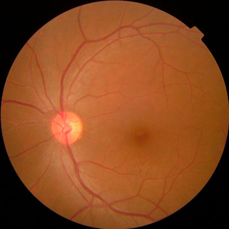
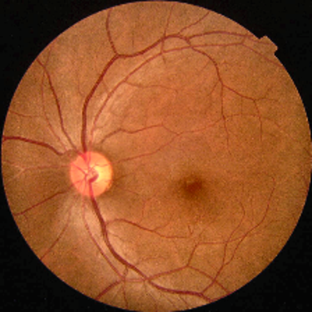

🩺 Diabetic Retinopathy Detection & Grad-CAM Analysis
Upload a digital retinal fundus photograph to detect diabetic retinopathy, inspect lesion attention heatmaps, and generate a clinical PDF report.
▼
Visual Analysis & Grad-CAM Heatmap
1. Original Fundus Photograph

2. CLAHE Contrast Enhanced

3. Grad-CAM Lesion Attention
Probability Distribution
Healthy (No-DR): 99.97%
Diabetic Retinopathy (DR): 0.03%
HEALTHY (NO-DR)
99.97%
DR DETECTED
0.03%
Grad-CAM Lesion Heatmap Guide
How to Interpret the Attention Overlay
- Warm Spectrum (Red / Orange / Yellow): Highlights key retinal zones where the model detects microaneurysms, hemorrhages, or exudates.
- Cool Spectrum (Blue / Violet): Indicates healthy background retinal parenchyma and normal tissue regions.
- Clinical Triage: Provides explainable visual verification to assist eye care specialists in confirming lesion localization.